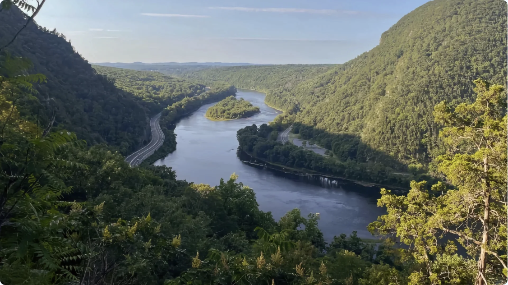
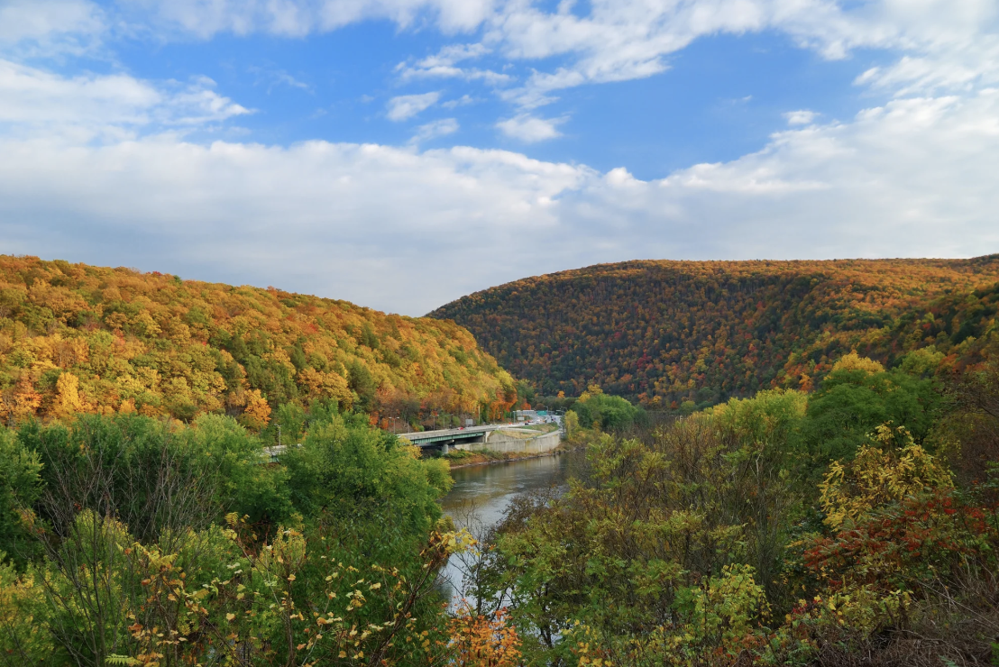
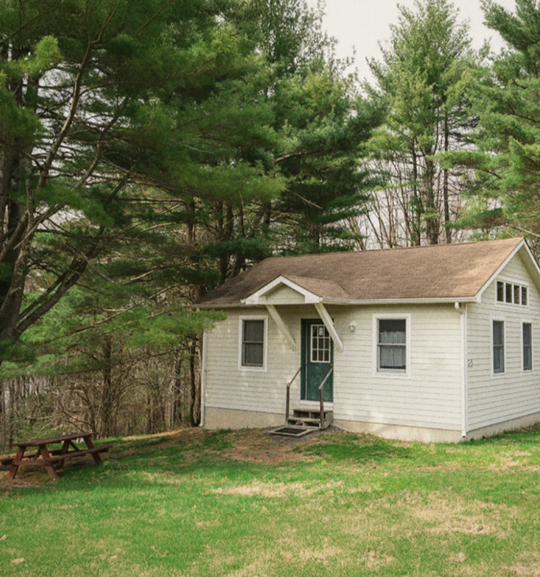
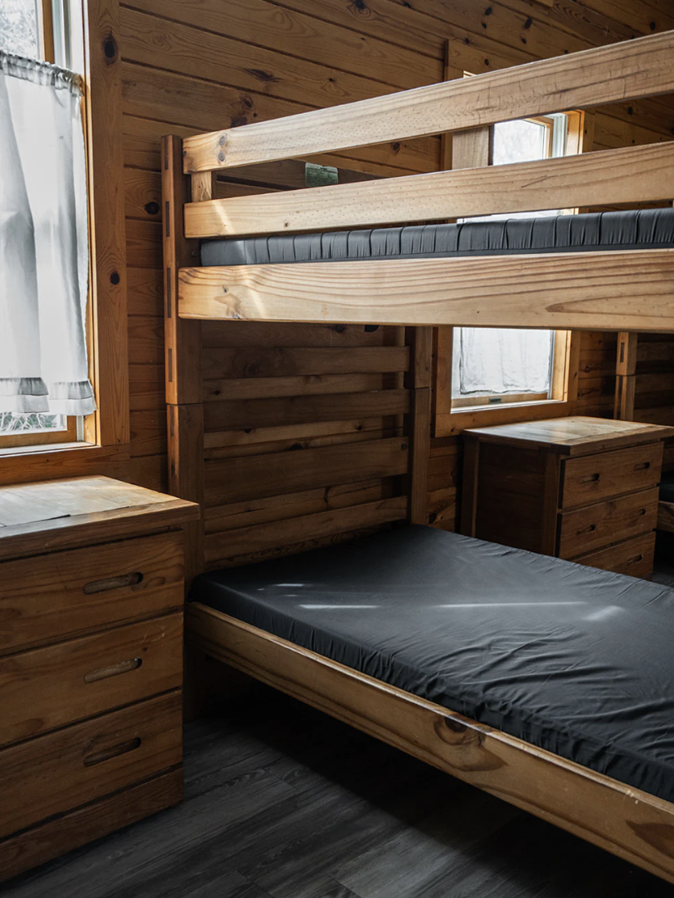
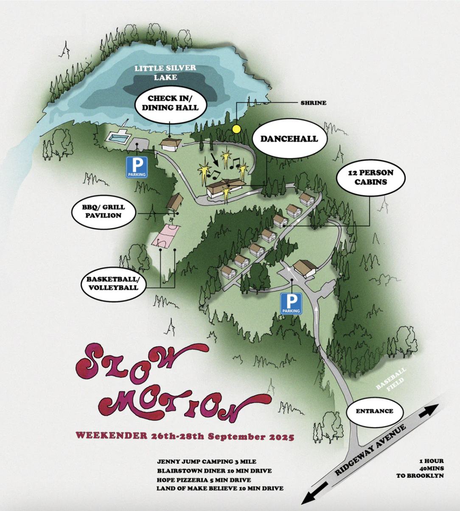

Welcome to...
( __) __ _ (__)
,gg, `-( __) _( )_( )_ (_ ) __)-'
i8""8i ,dPYb, (____) (_ _ _) `-(____)-'@@,
`8,,8' IP'`Yb - - : : - - (_) (__) ,,,. ,@@@@@@/@@,
`88' I8 8I / `-' \ ,&%%&%&&%,@@@@@/@@@@@@
dP"8, I8 8' | ,%&\%&&%&&%,@@@\@@@/@@@
dP' `8a I8 dP ,ggggg, gg gg %&&%&%&/%&&%@@\@@/ /@@@
dP' `Yb I8dP dP" "Y8gggI8 I8 88b %&&%/ %&%%&&@@\ V /@@'
_ ,dP' I8 I8P i8' ,8I I8 I8 8I `&%\ ` /%&' |.|
"888,,____,dP,d8b,_ ,d8, ,d8' ,d8, ,d8, ,8I |o| /\ | |
a8P"Y88888P" 8P'"Y88P"Y8888P" P""Y88P""Y88P" /\|.| //\\ /\
`'. .'`'. .'`'. .'`'. .'`' //\\._\ ///\\ //\\//_
,ggg, ,ggg,_,ggg, `'. .'`'. .'`'. .'`'. . ///\\\ ][ ///\\\
dP""Y8dP""Y88P""Y8b I8 ][ ][
Yb, `88' `88' `88 I8
_( )_ `" 88 88 88 88888888 gg `'. .'`'. .'`'. .'`'. .'`'.
(_(%)_) 88 88 88 I8 ""
(_)\ 88 88 88 ,ggggg, I8 gg ,ggggg, ,ggg,,ggg,
| __ 88 88 88 dP" "Y8gggI8 88 dP" "Y8g8" "8P" "8,
|/_/ 88 88 88 i8' ,8I ,I8, 88 i8' ,8I 8I 8I
| 88 88 Y8,,d8, ,d8',d88b,_,88,_,d8, ,d8' 8I Yb,
| 88 88 `Y8P"Y8888P" 8P""Y88P""Y8P"Y8888P" 8I `Y8
｡･ﾟﾟ･｡･ﾟﾟ･｡･ﾟﾟ･｡･ﾟﾟ･｡･ﾟﾟ･｡･ﾟﾟ･｡･ﾟﾟ･｡･ﾟﾟ･｡･ﾟﾟ･｡･ﾟﾟ･｡･ﾟﾟ･｡･ﾟﾟ･｡･ﾟﾟ･｡･ﾟﾟ･｡･ﾟﾟ･｡･ﾟﾟ･｡･ﾟﾟ･｡･ﾟﾟ･｡
╔═*.·:·.✧ ✦ ⋆⋅☆⋅⋆ ✧ ✦✧.·:·.*═╗
╚═*.·:·.✧ ✦ ⋆⋅☆⋅⋆ ✧ ✦✧.·:·.*═╝
｡･ﾟﾟ･｡･ﾟﾟ･｡･ﾟﾟ･｡･ﾟﾟ･｡･ﾟﾟ･｡･ﾟﾟ･｡･ﾟﾟ･｡･ﾟﾟ･｡･ﾟﾟ･｡･ﾟﾟ･｡･ﾟﾟ･｡･ﾟﾟ･｡･ﾟﾟ･｡･ﾟﾟ･｡･ﾟﾟ･｡･ﾟﾟ･｡･ﾟﾟ･｡･ﾟﾟ･｡
Location |
Camp Map |
Transportation |
Lineup |
Rules |
FAQ |
Contact
.・。.・゜✭・.・✫・゜・。.
Location
｡･ﾟﾟ･｡･ﾟﾟ･｡･ﾟﾟ･｡･ﾟﾟ･｡･ﾟﾟ･｡･ﾟﾟ･｡･ﾟﾟ･｡･ﾟﾟ･｡･ﾟﾟ･｡･ﾟﾟ･｡･ﾟﾟ･｡･ﾟﾟ･｡･ﾟﾟ･｡･ﾟﾟ･｡･ﾟﾟ･｡･ﾟﾟ･｡･ﾟﾟ･｡･ﾟﾟ･｡
Hope Conference & Renewal Center ✨ Blairstown, NJ
｡･ﾟﾟ･｡･ﾟﾟ･｡･ﾟﾟ･｡･ﾟﾟ･｡･ﾟﾟ･｡･ﾟﾟ･｡･ﾟﾟ･｡･ﾟﾟ･｡･ﾟﾟ･｡･ﾟﾟ･｡･ﾟﾟ･｡･ﾟﾟ･｡･ﾟﾟ･｡･ﾟﾟ･｡･ﾟﾟ･｡･ﾟﾟ･｡･ﾟﾟ･｡･ﾟﾟ･｡

.・。.・゜✭・.・✫・゜・。.
~1.5 hours driving from NYC, with public transport options below !
We'll be nestled next to the Delaware Water Gap National Recreation Area and Kittatinny Mountain Ridge full of hikes, trails, lookouts, streams and waterfalls.
.・。.・゜✭・.・✫・゜・。.

.・。.・゜✭・.・✫・゜・。.
Our favorites spots are Jenny Jump State Forest and campgrounds (8 minute drive), Mt. Tammany (10 min) and Worthington State Forest (20 min).
.・。.・゜✭・.・✫・゜・。.
｡･ﾟﾟ･｡･ﾟﾟ･｡･ﾟﾟ･｡･ﾟﾟ･｡･ﾟﾟ･｡･ﾟﾟ･｡･ﾟﾟ･｡･ﾟﾟ･｡･ﾟﾟ･｡･ﾟﾟ･｡･ﾟﾟ･｡･ﾟﾟ･｡･ﾟﾟ･｡･ﾟﾟ･｡･ﾟﾟ･｡･ﾟﾟ･｡･ﾟﾟ･｡･ﾟﾟ･｡
Camp Hope
｡･ﾟﾟ･｡･ﾟﾟ･｡･ﾟﾟ･｡･ﾟﾟ･｡･ﾟﾟ･｡･ﾟﾟ･｡･ﾟﾟ･｡･ﾟﾟ･｡･ﾟﾟ･｡･ﾟﾟ･｡･ﾟﾟ･｡･ﾟﾟ･｡･ﾟﾟ･｡･ﾟﾟ･｡･ﾟﾟ･｡･ﾟﾟ･｡･ﾟﾟ･｡･ﾟﾟ･｡
We were sure Camp Hope was the right space for Slow Motion when we learned of its ties back to the Paradise Garage - our own doorkeeper Angel worked there with a swath of club alumni in ’87.
｡･ﾟﾟ･｡･ﾟﾟ･｡･ﾟﾟ･｡･ﾟﾟ･｡･ﾟﾟ･｡･ﾟﾟ･｡･ﾟﾟ･｡･ﾟﾟ･｡･ﾟﾟ･｡･ﾟﾟ･｡･ﾟﾟ･｡･ﾟﾟ･｡･ﾟﾟ･｡･ﾟﾟ･｡･ﾟﾟ･｡･ﾟﾟ･｡･ﾟﾟ･｡･ﾟﾟ･｡
Lodging


.・。.・゜✭・.・✫・゜・。.
2 nights in an on-site cabin (Friday & Saturday)
.・。.・゜✭・.・✫・゜・。.
｡･ﾟﾟ･｡･ﾟﾟ･｡･ﾟﾟ･｡･ﾟﾟ･｡･ﾟﾟ･｡･ﾟﾟ･｡･ﾟﾟ･｡･ﾟﾟ･｡･ﾟﾟ･｡･ﾟﾟ･｡･ﾟﾟ･｡･ﾟﾟ･｡･ﾟﾟ･｡･ﾟﾟ･｡･ﾟﾟ･｡･ﾟﾟ･｡･ﾟﾟ･｡･ﾟﾟ･｡
Camp Map

Click to download!
.・。.・゜✭・.・✫・゜・。.
_________________________
/\\ _____ _____ | | | | | | \
,-----, / \\____/__|__\_ ___/__|__\___ |___|_____|_____|____|_|___\
,--'---:---`--, / | _ | `| | | `| | | | \
==(o)-----(o)==J `(o)-------(o)= `(o)------(o)' `--(o)(o)--------------(o)--'
｡･ﾟﾟ･｡･ﾟﾟ･｡･ﾟﾟ･｡･ﾟﾟ･｡･ﾟﾟ･｡･ﾟﾟ･｡･ﾟﾟ･｡･ﾟﾟ･｡･ﾟﾟ･｡･ﾟﾟ･｡･ﾟﾟ･｡･ﾟﾟ･｡･ﾟﾟ･｡･ﾟﾟ･｡･ﾟﾟ･｡･ﾟﾟ･｡･ﾟﾟ･｡･ﾟﾟ･｡｡･ﾟﾟ･｡･ﾟﾟ･
Transportation
｡･ﾟﾟ･｡･ﾟﾟ･｡･ﾟﾟ･｡･ﾟﾟ･｡･ﾟﾟ･｡･ﾟﾟ･｡･ﾟﾟ･｡･ﾟﾟ･｡･ﾟﾟ･｡･ﾟﾟ･｡･ﾟﾟ･｡･ﾟﾟ･｡･ﾟﾟ･｡･ﾟﾟ･｡･ﾟﾟ･｡･ﾟﾟ･｡･ﾟﾟ･｡･ﾟﾟ･｡
Driving
- __
-- ~( @\ \
--- _________]_[__/_>________
/ ____ \ > | ____ \
=\_/ __ \_\_______|_/ __ \__D
________(__)_____________(__)____
If you're driving your car or renting one, Camp Hope is ~1.5 hours from NYC. Parking is free!
｡･ﾟﾟ･｡･ﾟﾟ･｡･ﾟﾟ･｡･ﾟﾟ･｡･ﾟﾟ･｡･ﾟﾟ･｡･ﾟﾟ･｡･ﾟﾟ･｡･ﾟﾟ･｡･ﾟﾟ･｡･ﾟﾟ･｡･ﾟﾟ･｡･ﾟﾟ･｡･ﾟﾟ･｡･ﾟﾟ･｡･ﾟﾟ･｡･ﾟﾟ･｡･ﾟﾟ･｡
Bus
__
.-----------------------' |
/| _ .---. .---. .---. .---.|
|j||||___| |___| |___| |___||
|=|||================MARTZ==|
[_|j||(O)\__________|(O)\___]
Bus is the best way to get to Camp Hope using public transportation.
｡･ﾟﾟ･｡･ﾟﾟ･｡･ﾟﾟ･｡･ﾟﾟ･｡･ﾟﾟ･｡･ﾟﾟ･｡･ﾟﾟ･｡･ﾟﾟ･｡･ﾟﾟ･｡･ﾟﾟ･｡･ﾟﾟ･｡･ﾟﾟ･｡･ﾟﾟ･｡･ﾟﾟ･｡･ﾟﾟ･｡･ﾟﾟ･｡･ﾟﾟ･｡･ﾟﾟ･｡
Train
e@@@@@@@@@@@@@@@
@@@""""""""""
@" ___ ___________
II__[w] | [i] [z] |
{======|_|~~~~~~~~~|
/oO--000'"`-OO---OO-'
Take the NJ Transit Rail from NY Penn Station to Dover, NJ.
｡･ﾟﾟ･｡･ﾟﾟ･｡･ﾟﾟ･｡･ﾟﾟ･｡･ﾟﾟ･｡･ﾟﾟ･｡･ﾟﾟ･｡･ﾟﾟ･｡･ﾟﾟ･｡･ﾟﾟ･｡･ﾟﾟ･｡･ﾟﾟ･｡･ﾟﾟ･｡･ﾟﾟ･｡･ﾟﾟ･｡･ﾟﾟ･｡･ﾟﾟ･｡･ﾟﾟ･｡
Carpool
@
(__) (__) _____/
/| (oo) _ (oo)/----/_____ *
_o\______/_|\_\/_/_|__\/|____|//////== *- * * -
/_________ \ 00 | 00 | /== -* * -
[_____/^^\_____\_____|_____/^^\_____] *- * -
\__/ \__/
If you need or can offer a ride between Brooklyn or a bus / train station, email us and we'll get you sorted.
Lineup
｡･ﾟﾟ･｡･ﾟﾟ･｡･ﾟﾟ･｡･ﾟﾟ･｡･ﾟﾟ･｡･ﾟﾟ･｡･ﾟﾟ･｡･ﾟﾟ･｡･ﾟﾟ･｡･ﾟﾟ･｡･ﾟﾟ･｡･ﾟﾟ･｡･ﾟﾟ･｡･ﾟﾟ･｡･ﾟﾟ･｡･ﾟﾟ･｡･ﾟﾟ･｡･ﾟﾟ･｡
Lineup will be posted... 🎵
Rules
｡･ﾟﾟ･｡･ﾟﾟ･｡･ﾟﾟ･｡･ﾟﾟ･｡･ﾟﾟ･｡･ﾟﾟ･｡･ﾟﾟ･｡･ﾟﾟ･｡･ﾟﾟ･｡･ﾟﾟ･｡･ﾟﾟ･｡･ﾟﾟ･｡･ﾟﾟ･｡･ﾟﾟ･｡･ﾟﾟ･｡･ﾟﾟ･｡･ﾟﾟ･｡･ﾟﾟ･｡
Slow Motion is about moving together, with care
Let’s build a space where everyone can feel good, free, and welcome.
That means looking out for each other, being mindful of boundaries, and keeping the energy kind and open.
Say hi to others!
｡･ﾟﾟ･｡･ﾟﾟ･｡･ﾟﾟ･｡･ﾟﾟ･｡･ﾟﾟ･｡･ﾟﾟ･｡･ﾟﾟ･｡･ﾟﾟ･｡･ﾟﾟ･｡･ﾟﾟ･｡･ﾟﾟ･｡･ﾟﾟ･｡･ﾟﾟ･｡･ﾟﾟ･｡･ﾟﾟ･｡･ﾟﾟ･｡･ﾟﾟ･｡･ﾟﾟ･｡
Leave no trace
Treat Camp Hope like a home and leave it as we found it—clean, cared for, and beautiful.
｡･ﾟﾟ･｡･ﾟﾟ･｡･ﾟﾟ･｡･ﾟﾟ･｡･ﾟﾟ･｡･ﾟﾟ･｡･ﾟﾟ･｡･ﾟﾟ･｡･ﾟﾟ･｡･ﾟﾟ･｡･ﾟﾟ･｡･ﾟﾟ･｡･ﾟﾟ･｡･ﾟﾟ･｡･ﾟﾟ･｡･ﾟﾟ･｡･ﾟﾟ･｡･ﾟﾟ･｡
Our dance floor
No phones, cameras, video or socials on the dance floor.
If you’re a dance floor talker, please stand off to the side and leave the floor to the dancers.
｡･ﾟﾟ･｡･ﾟﾟ･｡･ﾟﾟ･｡･ﾟﾟ･｡･ﾟﾟ･｡･ﾟﾟ･｡･ﾟﾟ･｡･ﾟﾟ･｡･ﾟﾟ･｡･ﾟﾟ･｡･ﾟﾟ･｡･ﾟﾟ･｡･ﾟﾟ･｡･ﾟﾟ･｡･ﾟﾟ･｡･ﾟﾟ･｡･ﾟﾟ･｡･ﾟﾟ･｡
Smoking area will be designated on the day of
Camp Hope’s official policy doesn’t allow smoking.
｡･ﾟﾟ･｡･ﾟﾟ･｡･ﾟﾟ･｡･ﾟﾟ･｡･ﾟﾟ･｡･ﾟﾟ･｡･ﾟﾟ･｡･ﾟﾟ･｡･ﾟﾟ･｡･ﾟﾟ･｡･ﾟﾟ･｡･ﾟﾟ･｡･ﾟﾟ･｡･ﾟﾟ･｡･ﾟﾟ･｡･ﾟﾟ･｡･ﾟﾟ･｡･ﾟﾟ･｡
No alcohol on site
Camp Hope’s official policy doesn’t allow alcohol. Please respect the space and keep beverages in a resealable container.
｡･ﾟﾟ･｡･ﾟﾟ･｡･ﾟﾟ･｡･ﾟﾟ･｡･ﾟﾟ･｡･ﾟﾟ･｡･ﾟﾟ･｡･ﾟﾟ･｡･ﾟﾟ･｡･ﾟﾟ･｡･ﾟﾟ･｡･ﾟﾟ･｡･ﾟﾟ･｡･ﾟﾟ･｡･ﾟﾟ･｡･ﾟﾟ･｡･ﾟﾟ･｡･ﾟﾟ･｡
Food storage
Food must be stored in the dining hall or in a sealed container in your cabin. There are bears!
｡･ﾟﾟ･｡･ﾟﾟ･｡･ﾟﾟ･｡･ﾟﾟ･｡･ﾟﾟ･｡･ﾟﾟ･｡･ﾟﾟ･｡･ﾟﾟ･｡･ﾟﾟ･｡･ﾟﾟ･｡･ﾟﾟ･｡･ﾟﾟ･｡･ﾟﾟ･｡･ﾟﾟ･｡･ﾟﾟ･｡･ﾟﾟ･｡･ﾟﾟ･｡･ﾟﾟ･｡
Cabin etiquette
Please be quiet in the cabins when people are sleeping. You can hang in the dining hall 24/7.
｡･ﾟﾟ･｡･ﾟﾟ･｡･ﾟﾟ･｡･ﾟﾟ･｡･ﾟﾟ･｡･ﾟﾟ･｡･ﾟﾟ･｡･ﾟﾟ･｡･ﾟﾟ･｡･ﾟﾟ･｡･ﾟﾟ･｡･ﾟﾟ･｡･ﾟﾟ･｡･ﾟﾟ･｡･ﾟﾟ･｡･ﾟﾟ･｡･ﾟﾟ･｡･ﾟﾟ･｡
No RVs or camping, swimming in the lake, candles, speakers or glitter
If you have any questions about similar things, just reach out beforehand.
｡･ﾟﾟ･｡･ﾟﾟ･｡･ﾟﾟ･｡･ﾟﾟ･｡･ﾟﾟ･｡･ﾟﾟ･｡･ﾟﾟ･｡･ﾟﾟ･｡･ﾟﾟ･｡･ﾟﾟ･｡･ﾟﾟ･｡･ﾟﾟ･｡･ﾟﾟ･｡･ﾟﾟ･｡･ﾟﾟ･｡･ﾟﾟ･｡･ﾟﾟ･｡･ﾟﾟ･｡
Take care of yourself and each other!
Make sure you’re getting enough rest, food, and water—and keep an eye on how you’re feeling.
FAQ
｡･ﾟﾟ･｡･ﾟﾟ･｡･ﾟﾟ･｡･ﾟﾟ･｡･ﾟﾟ･｡･ﾟﾟ･｡･ﾟﾟ･｡･ﾟﾟ･｡･ﾟﾟ･｡･ﾟﾟ･｡･ﾟﾟ･｡･ﾟﾟ･｡･ﾟﾟ･｡･ﾟﾟ･｡･ﾟﾟ･｡･ﾟﾟ･｡･ﾟﾟ･｡･ﾟﾟ･｡
What should I bring?
Comfortable clothing for day and night (layers, warm clothes, extra socks, waterproof gear if it rains)
Twin bedding, toiletries, towel and shower shoes
Reusable water bottle (we’ll have reusable cups available for a $1 deposit)
Resealable container, koozies or coolers for special drinks
Air-tight container or cooler for any snacks or food not stored in the dining hall
Yoga mat if you’re participating in Saturday’s complimentary restorative yoga
Picnic blanket, hammock or anything else for lounging
Flashlight or headlamp, earplugs, sleep mask
Sunscreen and bug spray
Any medications or personal care items you may need
Don’t bring laptops, speakers or valuables—unplug and enjoy the experience!
｡･ﾟﾟ･｡･ﾟﾟ･｡･ﾟﾟ･｡･ﾟﾟ･｡･ﾟﾟ･｡･ﾟﾟ･｡･ﾟﾟ･｡･ﾟﾟ･｡･ﾟﾟ･｡･ﾟﾟ･｡･ﾟﾟ･｡･ﾟﾟ･｡･ﾟﾟ･｡･ﾟﾟ･｡･ﾟﾟ･｡･ﾟﾟ･｡･ﾟﾟ･｡･ﾟﾟ･｡
Can I bring my own food?
｡･ﾟﾟ･｡･ﾟﾟ･｡･ﾟﾟ･｡･ﾟﾟ･｡･ﾟﾟ･｡･ﾟﾟ･｡･ﾟﾟ･｡･ﾟﾟ･｡･ﾟﾟ･｡･ﾟﾟ･｡･ﾟﾟ･｡･ﾟﾟ･｡･ﾟﾟ･｡･ﾟﾟ･｡･ﾟﾟ･｡･ﾟﾟ･｡･ﾟﾟ･｡･ﾟﾟ･｡
What if it rains?
inside :)
｡･ﾟﾟ･｡･ﾟﾟ･｡･ﾟﾟ･｡･ﾟﾟ･｡･ﾟﾟ･｡･ﾟﾟ･｡･ﾟﾟ･｡･ﾟﾟ･｡･ﾟﾟ･｡･ﾟﾟ･｡･ﾟﾟ･｡･ﾟﾟ･｡･ﾟﾟ･｡･ﾟﾟ･｡･ﾟﾟ･｡･ﾟﾟ･｡･ﾟﾟ･｡･ﾟﾟ･｡
Where do I check in and park?
｡･ﾟﾟ･｡･ﾟﾟ･｡･ﾟﾟ･｡･ﾟﾟ･｡･ﾟﾟ･｡･ﾟﾟ･｡･ﾟﾟ･｡･ﾟﾟ･｡･ﾟﾟ･｡･ﾟﾟ･｡･ﾟﾟ･｡･ﾟﾟ･｡･ﾟﾟ･｡･ﾟﾟ･｡･ﾟﾟ･｡･ﾟﾟ･｡･ﾟﾟ･｡･ﾟﾟ･｡
Where's my bunk?
You’ll receive your cabin assignment when checking in at the greeter station near Camp Hope’s entrance.
｡･ﾟﾟ･｡･ﾟﾟ･｡･ﾟﾟ･｡･ﾟﾟ･｡･ﾟﾟ･｡･ﾟﾟ･｡･ﾟﾟ･｡･ﾟﾟ･｡･ﾟﾟ･｡･ﾟﾟ･｡･ﾟﾟ･｡･ﾟﾟ･｡･ﾟﾟ･｡･ﾟﾟ･｡･ﾟﾟ･｡･ﾟﾟ･｡･ﾟﾟ･｡･ﾟﾟ･｡
Can I leave temporarily?
｡･ﾟﾟ･｡･ﾟﾟ･｡･ﾟﾟ･｡･ﾟﾟ･｡･ﾟﾟ･｡･ﾟﾟ･｡･ﾟﾟ･｡･ﾟﾟ･｡･ﾟﾟ･｡･ﾟﾟ･｡･ﾟﾟ･｡･ﾟﾟ･｡･ﾟﾟ･｡･ﾟﾟ･｡･ﾟﾟ･｡･ﾟﾟ･｡･ﾟﾟ･｡･ﾟﾟ･｡
Where’s lost & found?
｡･ﾟﾟ･｡･ﾟﾟ･｡･ﾟﾟ･｡･ﾟﾟ･｡･ﾟﾟ･｡･ﾟﾟ･｡･ﾟﾟ･｡･ﾟﾟ･｡･ﾟﾟ･｡･ﾟﾟ･｡･ﾟﾟ･｡･ﾟﾟ･｡･ﾟﾟ･｡･ﾟﾟ･｡･ﾟﾟ･｡･ﾟﾟ･｡･ﾟﾟ･｡･ﾟﾟ･｡
Can I refund or transfer my ticket?
You may transfer your ticket to someone else by contacting us at least 7 days before Slow Motion with the recipient’s full name and email address.
If you’d like to upgrade your ticket (e.g., from General Admission to All-In), you can do so through your Slow Motion account or by contacting us .
Availability may be limited, so we recommend requesting changes early.
｡･ﾟﾟ･｡･ﾟﾟ･｡･ﾟﾟ･｡･ﾟﾟ･｡･ﾟﾟ･｡･ﾟﾟ･｡･ﾟﾟ･｡･ﾟﾟ･｡･ﾟﾟ･｡･ﾟﾟ･｡･ﾟﾟ･｡･ﾟﾟ･｡･ﾟﾟ･｡･ﾟﾟ･｡･ﾟﾟ･｡･ﾟﾟ･｡･ﾟﾟ･｡･ﾟﾟ･｡
Join us for music, art, and open skies 🌤️
Room for anything else you can think of!
{kind=link}